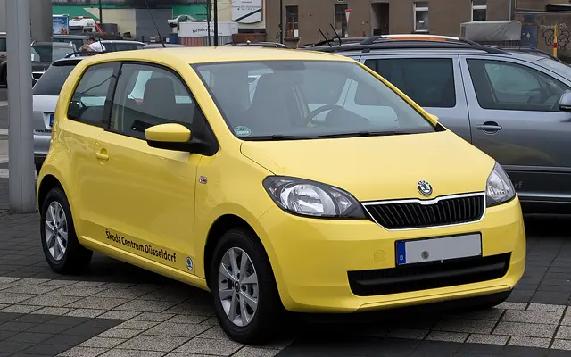

Par Motor › Precios por modelo › Skoda Citigo
Precio de segunda mano · noviembre de 2026¿Cuánto vale un Skoda Citigo de segunda mano?

Precio justo estimado de un Skoda Citigo usado en España, año por año, con los kilómetros normales para su edad y en buen estado: de 5.300 € a 11.600 €. Para tasar el tuyo con sus kilómetros reales y su estado, usa el tasador gratis.
Precios del Skoda Citigo por año
Citigo (2012–2020)
Precio de nuevo: 1.0 60 CV, 9.500 € · e-iV 83 CV, 21.000 € · 1.0 75 CV, 10.500 €
| Año | Km normales | 1.0 60 CV · Gasolina | e-iV 83 CV · Eléctrico | 1.0 75 CV · Gasolina |
|---|---|---|---|---|
| 2020 | 95.000 km | 6.200 € | 11.600 € | 6.800 € |
| 2019 | 100.000 km | 6.000 € | 11.200 € | 6.600 € |
| 2018 | 100.000 km | 6.000 € | 11.200 € | 6.600 € |
| 2017 | 100.000 km | 5.900 € | 11.200 € | 6.600 € |
| 2016 | 100.000 km | 5.900 € | 11.100 € | 6.500 € |
| 2015 | 100.000 km | 5.900 € | 11.000 € | 6.500 € |
| 2014 | 100.000 km | 5.800 € | 10.900 € | 6.400 € |
| 2013 | 100.000 km | 5.600 € | 10.500 € | 6.200 € |
| 2012 | 100.000 km | 5.300 € | 10.000 € | 5.900 € |
Kilómetros normales: 15.000 al año en gasolina, híbridos y eléctricos, y 20.000 en diésel, con un máximo de 100.000 km (por encima no tasamos: el precio depende demasiado del historial de cada coche). Cifras redondeadas a 100 €.
Preguntas frecuentes
¿Cuánto vale un Skoda Citigo de segunda mano?
Según el año, la versión y los kilómetros, un Skoda Citigo usado vale hoy de 5.300 € a 11.600 € en España. El más barato de nuestra tabla es un 1.0 de 2012 (5.300 €) y el más caro un e-iV de 2020 (11.600 €). Son precios justos estimados entre particulares y profesionales, con los kilómetros normales para su edad y en buen estado.
¿Qué motorizaciones tiene el Skoda Citigo?
En nuestra base de datos hay versiones gasolina y eléctrico, en 1 generación: Citigo.
¿Cómo sé si me piden demasiado por un Skoda Citigo?
Abre el tasador de Par Motor, elige el Skoda Citigo, el año y los kilómetros reales, y escribe lo que te piden. Te diremos si está por debajo del precio justo (chollo) o por encima (caro). Es gratis y no pide registro ni matrícula.
Otros Skoda
Compara su coste real
El precio de compra es solo una parte. Mira cuánto te costaría al mes con combustible, seguro, neumáticos, mantenimiento y lo que pierde de valor.
Abrir el comparador →